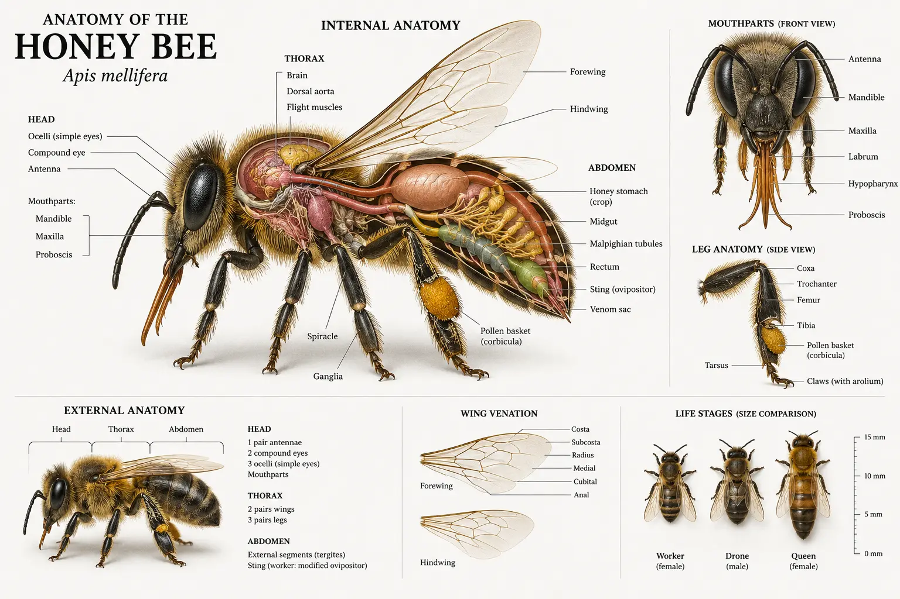

Honeybee Anatomy (UK) – Workers, Drones and Queens
Last updated: 1 May 2026

Honeybees (Apis mellifera) have a highly specialised body built for life in a colony: foraging, wax building, brood rearing, defence and communication. For UK beekeepers, understanding anatomy is not just "interesting biology" — it helps you recognise what you're seeing on frames, interpret behaviour and spot early warning signs during inspections.
Understanding anatomy also helps connect key beekeeping concepts together — from how bees make honey and nectar processing, to the queen development timeline, the different types of bees in a hive, what happens during swarming, and the seasonal changes in the colony throughout the year.
A honeybee's body is divided into three main sections: the head, thorax and abdomen. Within those sections are the structures that make pollination possible, allow bees to regulate the hive and enable the colony to raise a queen and (if conditions push them) prepare to swarm. These functions also shape the seasonal changes in the colony that beekeepers see from spring build-up through to winter survival.
The head: senses, feeding and communication
The head contains the brain, two large compound eyes, three small simple eyes (ocelli), antennae and the mouthparts. Compound eyes detect movement and patterns; ocelli help with light levels and orientation. Antennae are critical "multi-tools" for smell, touch and vibration — they detect pheromones that coordinate colony life and are central to how bees interact, learn and respond (see bee behaviour).
Mouthparts combine chewing and lapping. The proboscis (tongue) helps bees collect nectar, while mandibles are used for wax manipulation, feeding larvae and handling debris. These structures link directly to nectar handling and processing — the early stages of how bees make honey inside the hive.
The thorax: flight muscles and "working" equipment
The thorax is the powerhouse. It contains the flight muscles that drive two pairs of wings, and it anchors the six legs. Bees can forage widely when conditions allow, which is essential to their role in pollination.
Worker legs have specialised structures for grooming and pollen collection. The hind legs include pollen baskets (corbiculae) — the obvious "pollen saddlebags" you'll see when a forager returns loaded. That visible pollen is also a useful inspection clue: it often suggests brood is being fed (though it isn't a guarantee of a laying queen).
The abdomen: digestion, wax, scent and defence
The abdomen contains the digestive organs, wax glands (in workers), scent glands used in communication, reproductive organs and — in female bees — the sting. Workers produce wax scales from wax glands and use them to build comb. The honey stomach (crop) carries nectar back to the hive before it is processed and ripened.
Workers have a barbed sting for colony defence. Drones do not have a sting. Queens have a sting too, but it is smoother and used primarily in queen-to-queen combat rather than defence.
Worker vs Drone vs Queen: how to identify them on a frame
All three types share the same basic layout, but their bodies are adapted to different jobs. During UK inspections (especially in spring and early summer), the ability to quickly identify drones, spot a queen and recognise brood types can save time and reduce disruption. If you want a broader overview of the different types of bees in a hive, the honeybee facts page is a useful companion to this guide.
Workers: the "engine" of the colony
Workers are the smallest of the three. They are slimmer, with pollen baskets on the hind legs, wax glands and a barbed sting. Most of what you see happening on a frame — nursing, cleaning, storing nectar, building comb — is worker activity.
Drones: larger bodies and very large eyes
Drones are noticeably chunkier and fatter than workers, with a broader abdomen and a "blunt" appearance. The biggest giveaway is the eyes: drone compound eyes are much larger and often appear to meet at the top of the head, helping them locate queens during mating flights. Drones have no pollen baskets and no sting.
Queens: longer abdomen and a different "shape"
A queen is longer than a worker, with an abdomen that extends beyond the wing tips. Her thorax often looks broader and more solid, and she moves with purpose. Queens are frequently surrounded by attendants who face her, feed her and clear space. If you are learning to spot a queen, look for the different silhouette first — longer and sleeker — rather than trying to find a specific colour.
How to spot brood types and comb structure
Being able to read comb is one of the fastest ways to understand a colony. You're not just looking for "bees" — you're looking at cell size, cappings and patterns. This is where anatomy meets practical beekeeping.
Worker brood: flatter cappings and tighter pattern
Worker brood cells are smaller and the cappings are usually flatter and more even. A good worker brood pattern often looks like a tight patch of consistent cappings. (There will always be some variation — don't expect perfection — especially in UK weather swings that can interrupt laying.)
Drone brood: bigger cells and domed "bullet" cappings
Drone brood cells are larger and the cappings are raised and domed — often described as "bullet shaped". Drone comb can appear as larger, uneven patches, sometimes sticking out like a shelf from the face of the frame, especially on the edges or lower corners.
Queen cells: peanut-shaped and easy to recognise
Queen cells are usually easy to spot because they are larger, textured and look like a peanut shell. Position matters: swarm cells are often along the bottom edges of frames, while supersedure cells may be mid-frame. If you want to understand the wider context of what happens during swarming, queen cell position and timing need to be interpreted alongside brood, colony strength and season. (Always interpret in context — queen cells alone don't tell the full story.)
Foundation and cell size (why it matters)
Standard worker foundation encourages worker-sized cells. Drone cells are larger and are often built where bees have more freedom (frame edges, gaps, or where foundation is missing or poorly fitted). Seeing patches of drone comb is normal — colonies want some drones — but large areas of drone comb can reduce worker rearing space during key parts of the season.
Life cycle timing: worker vs drone vs queen (and why 16 days matters)
All honeybees develop through the same stages: egg → larva → pupa → adult. The major difference is how fast they develop. This matters for inspections because once a queen cell is started, events move quickly.
This timing is especially important when you understand the queen development timeline, as queens develop much faster than workers or drones and directly influence swarm timing and colony decisions.
Queens are the fastest to develop, followed by workers and then drones. If you can remember "queen 16, worker 21, drone 24", you have a powerful mental shortcut when planning UK inspections during swarm season.
| Bee type | Egg | Larva | Pupa | Total time (egg to adult) |
|---|---|---|---|---|
| Queen | 3 days | ~5 days | ~8 days | ~16 days (fastest) |
| Worker | 3 days | ~6 days | ~12 days | ~21 days |
| Drone | 3 days | ~6 days | ~15 days | ~24 days (slowest) |
In the UK, swarm season often ramps up in spring and early summer when colonies expand rapidly and weather windows can be short. Understanding anatomy and development helps explain what happens during swarming and why timing is so critical.
These changes are part of wider seasonal changes in the colony, where brood rearing, nectar flow and swarm pressure all shift through the year.
For trusted UK bee health guidance, BeeBase (National Bee Unit) and local associations (such as BBKA-linked groups) are reliable places to cross-check notifiable disease information and seasonal advice.
How anatomy links to real beekeeping decisions
Understanding honeybee anatomy is not just theory — it directly affects how you manage colonies, interpret inspections and respond to seasonal changes.
How anatomy drives honey production
The proboscis, honey stomach and enzyme systems all play a role in how bees make honey, from nectar collection through to ripening and storage.
Understanding colony roles
The different types of bees in a hive — workers, drones and queens — all have distinct anatomical features that reflect their roles.
Queen development and timing
The queen development timeline explains why queens emerge faster than other bees and why missing inspections can quickly lead to major colony changes.
Why swarming happens
Changes in anatomy, brood patterns and colony structure all contribute to what happens during swarming, especially during rapid spring build-up.
Seasonal colony behaviour
Anatomy supports the colony's ability to respond to seasonal changes in the colony, including nectar flows, brood rearing and winter survival.
Honeybee Anatomy FAQ
Drones are larger and stockier with very large eyes that often appear to meet at the top of the head. Workers are slimmer, have pollen baskets on the hind legs and can sting.
Look for the longer body shape first: the queen's abdomen extends beyond her wing tips. She often moves steadily across the frame with attendants around her.
Drone brood is capped with raised, domed "bullet" cappings. Drone comb uses larger cells and can appear in patches or protruding areas where bees have more freedom to build.
Queen cells are larger, textured and peanut-shaped. Swarm cells are commonly along the bottom edges of frames, while supersedure cells may appear mid-frame.
A queen develops from egg to adult in around 16 days, compared with 21 days for a worker and 24 days for a drone.
Because a queen can emerge quickly, delayed inspections (especially when UK weather restricts openings) can allow queen cells to progress to emergence, increasing the chance that a swarm has already left or is imminent.
See our bee behaviour page for communication, roles and why colonies make the decisions they do.
Pollen baskets and sensory equipment support foraging and pollination, while mouthparts and the honey stomach are key to nectar handling and how bees make honey inside the hive.